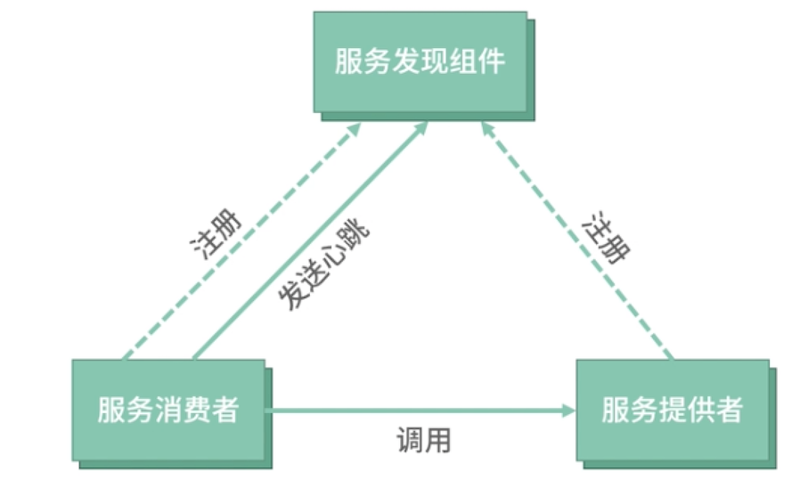
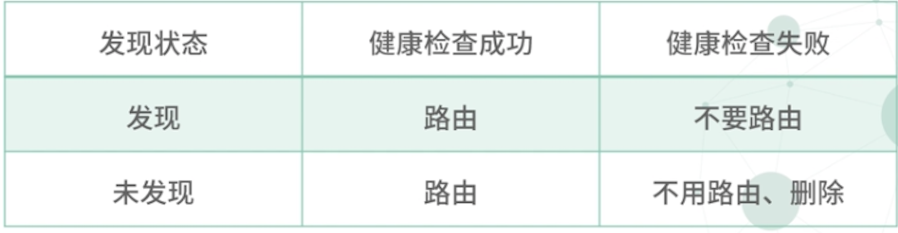

第二节 服务注册中心
微服务其中服务注册发现，是最先需要解决的问题。简单来说，服务注册与发现就是保证当服务上下线发生变更时，服务消费者和服务提供者能够保持正常通信。
而在分布式架构中，服务会注册到注册中心，当服务需要调用其他服务时，就到这里找到服务的地址，进行调用。
注册中心是微服务中最重要的内容，也是和 SOA 架构中的集中总线通信最大的区别点。
1、服务注册发现
假设在单体服务架构中，我们只有一个服务，这个服务前面就是像 Nginx 这样的网关系统，负责负载均衡，而后端的机器节点也是我们手动配置上去的，比如
upstream backend {
server 10.0.0.1:80;
server 10.0.0.2:80;
}
如果机器不够用了，增加一个节点，然后 reload 一下 Nginx 就好了。这样的配置，架构运行得还算稳定，维护成本公司也还可以接受。
随着项目越来越复杂，修正 Bug 和正确地添加新功能变得更加困难，你选择继续拆分服务。慢慢地，你拆分的服务数量上升到了两位数，但是你发现每次因为机器负载瓶颈而增加机器时，需要修改很多份内网网关配置， 这无形中可以预料到，修改配置带来的维护成本和出错的概率都会呈指数级增加。
解决上述问题的办法：服务注册发现。

- 服务在启动时，将自己的信息注册到服务发现组件中，服务发现组件会存储这些信息。
- 服务消费者可从服务发现组件查询服务提供者的网络地址，并使用该地址调用服务提供者接口。
- 而当服务提供者网络地址发生变更时，会重新注册到服务发现组件。
- 使用这种方式，服务消费者就无须人工修改提供者的网络地址了。
2、服务注册中心
具体怎样利用服务注册发现解决多个服务间的通信问题呢？
解决多个服务间通信问题的工具，我们称之为服务注册中心 所以有些人也会把注册中心叫作名字服务，顾名思义，也就是通过 服务名查找对应的服务地址的服务，在分布式架构中，注册中心承接了服务的地址录入和查找功能
3、注册中心的健康检查设计
3-1 服务主动探活
服务通过定时发送续租信息到注册中心，以表明自己节点的存活。
主动探活的方式其实是我们在使用注册中心时用得最多的一种方式，如果你的服务集群规模不大，或者选用了类似 Eureka 这样的最终一致性的注册中心，服务主动探活绝对是你的最优的选择
这种方式最大程度避免了在Kubernetes环境中，因为 IP 重用导致节点在旧的服务上依然存活的问题，毕竟续租信息都是带着服务信息上报到注册中心的。
主动探活的最大问题： 造成注册中心的写操作变多
在服务发布时，节点会产生比较大的变动，注册中心的写压力也就会变大。
而且强一致性的注册中心，节点变化一定要主节点确认，如果没有做注册中心的读写分离，就会产生大量的通知事件，对带宽、CPU 来说都是灾难性的问题，这个时候注册中心已经完全没有办法响应 TTL 的租约请求，也会导致大量的节点失效
主动租约，其实并不足以说明服务是健康的，毕竟有些情况下，服务虽然无法对外提供服务了，但还是可以对外发送租约请求的。
3-2 注册中心主动发起健康检查
服务在进行服务注册时，向注册中心表明自己的健康检查接口，比如 /ping 或者 TCP 端口，注册中心通过定时访问的方式，探明节点是否存活。
第二种方案在一定程度上解决了服务主动探活并不能说明服务健康的问题，毕竟通过 /ping这种健康检查接口很大程度上可以说明服务的健康度。在Kubernetes环境中，也是通过对 Pod 进行主动健康检查来判定 Pod 的健康度的。
但这个方案也有一些问题：
比如上面提到的 IP 重用问题，如果两个服务都用了 /ping接口做健康检查，并且端口一致，就很容易发生节点在旧服务被重新激活的问题。当然也有相应的解决方案，就是参考 Envoy 做服务名称的 check。
3-3 注册中心不进行任何健康检查，由调用方负载均衡器进行健康检查
注册中心不进行任何探活机制，全部由调用方的负载均衡器进行主动和被动探活。
第三种方案就比较极端了，不做任何健康检查，完全靠负载均衡器的能力。
这种方式也是有应用场景的，如果使用了 gRPC 这样比较完善的 RPC 库，一般都有自动摘除节点的能力。但我们也要考虑到这个方案的不足，如果 IP 被重用，节点很大概率会一直存在在旧服务中，这样的脏数据随时都是风险点。
当然我们可以结合前面两个方案，优化此方案。你可以在做健康检查的同时，注册中心下发包含健康节点和非健康节点的数据到服务节点，并针对健康检查未通过的删除节点设置一个较长的过期时间，这样就可以解决 IP 重用产生脏数据的问题了。
4、注册中心选型

我来简单解释一下 CAP 理论，一致性（Consistency）、可用性（Availability）、分区容错性（Partition tolerance），CAP 不可能都取，只能取其中2个。
所以在选型的时候，优先选择 AP 的系统。如果技术栈是 Go ，但又担心 Java 的组件不好维护，你也可以考虑自研注册中心，当然 CP 的注册中心并非不可用，在服务集群规模比较小的情况下，也是可以选择的。
5、搭建一个高可用、健壮的注册中心
5-1 在引入注册中心可能会遇的问题
- 注册中心完全故障了，服务是否还能正常访问？
- 注册中心因为高负载，推送了异常的数据，服务是否还能正常访问？
- 新加入的机器，出现了网络连通性问题（注册中心和机器网络正常，但服务机器之间网络异常），应该怎样应对？
- 服务是否应该完全信任注册中心推送的数据？
- 服务发布后，节频繁变更造成 N×M 次事件通知，形成广播风暴，该如何解决？
第三方基础设施，比如 MySQL 、Redis ，这种数据层的中间件，我们肯定是要完全信任其中的数据的。但对于注册中心，信任推送数据的风险非常大。
1. 注册中心完全故障了，服务是否还能正常访问？
所以只要在进程中缓存服务的节点，影响面就可控。
当注册中心完全故障的时候，服务注册功能是失效的，此时的扩容操作无法进行。
如果在容器中，因为 Pod 滚动升级的原因造成会先启动新的 Pod，一定要在程序启动注册失败时抛出异常，使程序无法启动，否则容器 IP 的变化也会导致服务的访问异常。
2. 注册中心因为高负载，推送了异常的数据，服务是否还能正常访问？
但随着微服务规模的增大，注册中心很有可能遇到瓶颈。一旦出现高负载，会使服务和注册中心之间的健康检查或保活出现问题，注册中心使节点异常下线，只推送部分节点数据到订阅的服务。
这个问题看似不严重，但一旦推送了过少的节点到服务，会导致主调服务打挂被调服务，长时间不能恢复，甚至会导致整个微服务集群雪崩。
解决此类问题，
- 我们可以在客户端的服务发现 SDK 中加入自我保护机制：
- 一旦服务的节点数量下降超过一定阈值，就进入自我保护状态，放弃使用新推送过来的服务注册信息。
3. 新加入的机器，出现了网络连通性问题（注册中心和机器网络正常，但服务机器之间网络异常），应该怎样应对？
实际上网络连通性问题是比较容易发生的，往往出于安全考虑，各个部门之间可能会处在不同的 VPC ，但现实中又有互相访问的情况，一旦网络规则维护不好，很容易出现新添加的机器注册中心的网段可以访问，但是服务之间却无法访问的情况。
在注册中心的使用场景中，网络故障是我们最优先考虑的问题，如果发生了分区故障，问题 2 描述的情况也会发生。
解决此类问题呢，这个就要发挥负载均衡器模块的作用了：在负载均衡中我们可以加入被动健康检查（节点熔断）和主动健康检查来在客户端主动剔除失效的节点。
4. 服务是否应该完全信任注册中心推送的数据？
Service Mesh 数据面之一 Envoy 的做法：
- 相比注册中心的数据
- 更信任本地数据
- 所以 Envoy 设计了 2×2 矩阵来决定节点是否应该路由。

只有在健康检查失败和注册中心未发现的情况才会删除节点，只要健康检查成功，无论是否发现此节点，都会路由。
5. 服务发布后，节点频繁变更造成 N×M 次事件通知，形成广播风暴，该如何解决？
可能导致问题 2 的发生。大量广播事件的发生，挤占网络带宽，甚至会导致网络带宽占满，此时注册中心和服务间的健康检查或保活，都会因为带宽不足造成信息丢失，使注册中心推送错误的数据。
如何解决呢？
其实很简单，我们可以将事件消息合并推送。在 Istio 的 Pilot 的模块中，实现了一种合并机制，100ms 内有新的事件消息时，便会继续等待下一条，最多等待 1s，当然时间的参数是可以配置的，这里我们说的是默认参数。
6、Service Mesh 中的注册中心
实际上在 Service Mesh 方案中，服务节点发现的问题用传统的注册中心方案也是可以解决的，但如果涉及 Kubernetes 和 ECS 跨集群访问，最好还是支持 Envoy 定义的 xDS 协议中的 EDS 协议。
EDS是 endpoint discovery service 的缩写，无论是 Istio，还是最新版本的 gRPC，都已经默认支持了 EDS 协议，可以说EDS 实际上已经是服务发现的规范了。
在 Service Mesh 方案中，因为大多是和 Kubernetes 集群结合的方案，所以你要特别注意发版或者自动扩缩容引起的节点 IP 变化的问题。节点的频繁变化，对注册中心的健壮性提出了更高的要求
除了用传统的注册中心组件外，Kubernetes 内部的发现机制在 Service Mesh 中也得到了广泛应用，例如 Istio通过监听 Kubernetes Pod 的变化，实现服务发现的功能，这样就不需要服务自身来做服务注册了。
7、Service Mesh 中实现的注册发现功能优势
7-1 无须服务自身注册，由 sidecar 代理注册
sidecar 通过接受控制面下发的配置信息，进行服务注册。相对于服务自身注册，这样可以减少服务自身开发的工作量，同时也很容易做到注册的配置信息一致化。
比如如果服务自己注册，其实很难控制服务注册的 metadata 信息，在 SDK 中很难约束和升级，比如运行环境、地域、健康检查方式等。
sidecar 代理还带来了可以随时更新 meta 信息的好处
在传统的 SDK 模式中，你想要动态调整服务的权重、metadata 等信息的时候，需要重新发布版本，或者依靠配置中心的能力，但这些控制信息往往散落在各个服务中，不方便管理，在 Service Mesh 中你只需要依靠控制面的能力，就可以轻松做到了。
7-2 通过控制面聚合多种、多个注册中心数据
像 Istio 的 pilot 模块，在 1.1 版本就支持了单控制面多集群的功能，通过 pilot 将多个注册中心的数据聚合，可以有效降低单一注册中心的读写压力，使注册中心更容易水平扩展。
比如在实践中，我就将多个 Consul 数据中心的数据通过 pilot 模块聚合，然后提供 xDS 协议，供服务发现使用，实现了虚拟机到 Kubernetes 环境的无缝迁移。
7-3 通过 sidecar 提供服务正确性 check 功能
际上如果服务 IP 发生变化，又用了同样的 ping 接口时，健康检查会出现错误。而通过 sidecar 模式，当发现服务 ping 接口过来的流量时，进行服务名称的检测，通过 header 中增加服务名称与本地服务名称做校验的方式进行检测，可以有效避免这样的错误。